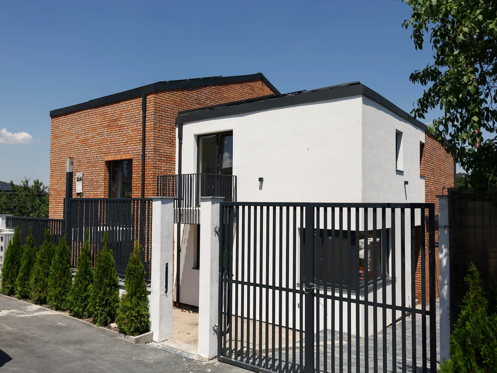
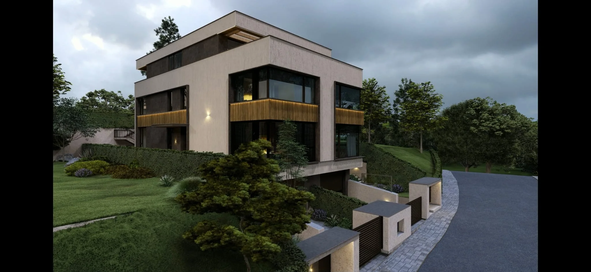
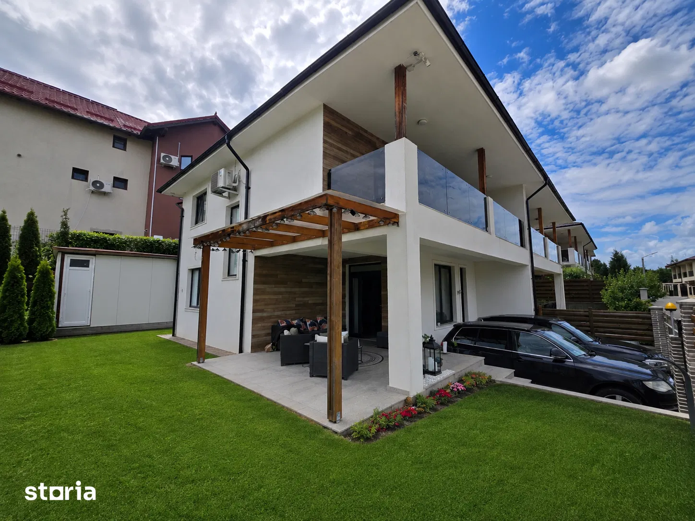

Direcție și plan de filmare
Am stabilit ce trebuie să transmită fiecare proprietate, ce spații merită accentuate și cum poate fi materialul adaptat pentru publicare.
01 Studiu de caz · Imobiliare
Am conectat producția video profesională și un website complet pentru a prezenta clar mai multe duplexuri din Cluj și împrejurimi.
Descoperă proiectulLuxuraInvest avea de prezentat mai multe proprietăți rezidențiale, fiecare cu propria locație, compartimentare și serie de avantaje. Provocarea a fost să transformăm toate aceste informații într-o experiență coerentă, ușor de parcurs și convingătoare vizual.
Am tratat proiectul ca pe un singur ecosistem: imaginile atrag atenția, materialele video transmit atmosfera și calitatea construcției, iar website-ul organizează informațiile și duce interesul către contact sau programarea unei vizionări.
Ideea centrală / 01
O proprietate nu se promovează printr-un singur cadru. Se construiește o experiență în care imaginea, informația și drumul spre contact lucrează împreună.
01 / Producție video
Filmarea a fost gândită pentru a reda spațiul, contextul și nivelul de execuție al proiectelor — nu doar pentru a aduna cadre frumoase.
Am stabilit ce trebuie să transmită fiecare proprietate, ce spații merită accentuate și cum poate fi materialul adaptat pentru publicare.
Filmări cu camere profesionale, cadre controlate și lavaliere pentru un sunet clar în materialele cu prezentare.
Perspective aeriene realizate cu dronă profesională pentru a arăta amplasarea, arhitectura și relația proprietăților cu zona.
Selecție, montaj, ritm, sunet și exporturi pregătite pentru website și canalele de comunicare ale brandului.
Proiecte prezentate



02 / Website
Am construit arhitectura, designul și paginile proiectelor astfel încât vizitatorul să înțeleagă rapid oferta și să poată cere detalii fără fricțiune.
Pagini distincte pentru companie, proiecte și fiecare proprietate, cu un traseu ușor de urmărit.
Suprafețe, amplasare, compartimentare, dotări și galerii organizate pentru o decizie informată.
Conținut adaptat pentru desktop și mobil, inclusiv materiale video optimizate pentru fiecare format.
Îndemnuri clare către solicitarea de detalii sau programarea unei vizionări, integrate natural în pagini.
Conținut conectat
Materialele video și structura website-ului au fost gândite împreună. Astfel, vizitatorul regăsește aceeași promisiune, același ton și aceeași atenție pentru detalii în fiecare punct de contact.
Explorează website-ul
03 / Rezultatul livrat
LuxuraInvest a primit o bază digitală completă pentru promovarea proprietăților: conținut video care poate capta atenția, o bibliotecă de imagini și cadre reutilizabile, plus un website care centralizează și explică oferta.
Valoarea proiectului nu stă într-un livrabil izolat, ci în felul în care toate componentele se susțin reciproc și pot continua să fie extinse odată cu noile dezvoltări rezidențiale.